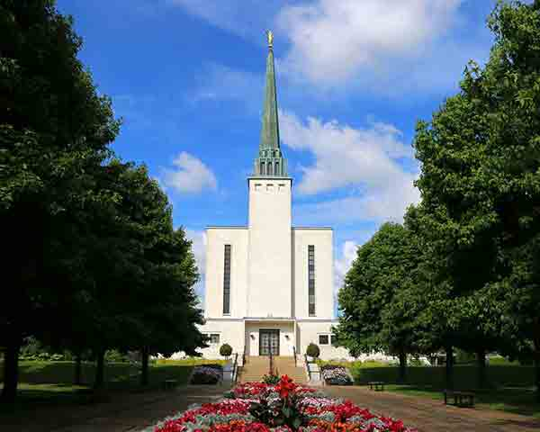

Welcome to Temple Inn & Suites!
Temple Spotlight
"The London England Temple was the second temple built in Europe, following the Bern Switzerland
Temple (1955) and the first built in the United Kingdom and was originally named the London Temple.
The London England Temple was dedicated in six sessions, Sunday through Tuesday. In attendance were
more general authorities of the Church than had been in England since 1840 when eight members of the
Twelve Apostles came as missionaries. President McKay observed his 85th birthday on this occasion on
September 8, 1958.
In 1990, the London England Temple closed for major remodeling and refurbishment, which included the
addition of a fourth floor, upgrading of mechanical systems, replacement of worn furnishings,
repainting of all interiors, cleaning of exterior, and more.
The temple reopened over two years later in October 1992, after a successful open house of over 55,200 visitors."
- ChurchofJesusChristTemples.org
Temple Inn & Suites
4800 Montgomery Ln #300
Bethesda, MD 20814
(301) 897-9400
hello@templeinnandsuites.com
Resources